Spec ads through a pipeline I built
Byoma and Lucy & Yak · unsolicited spec work · 2026
I wanted to know if one person with AI tools can take a real brand from research to a tested ad set without the craft slipping. So I directed an AI coding agent to build the pipeline with me, put a human decision at every stage, and ran two brands through it. The tools passed my first set. My own eye did not, and fixing that gap is most of what this page is about.
Spec work. Not commissioned by, affiliated with or approved by Byoma or Lucy & Yak. Generic packs, no real labels. None of these ads has run.
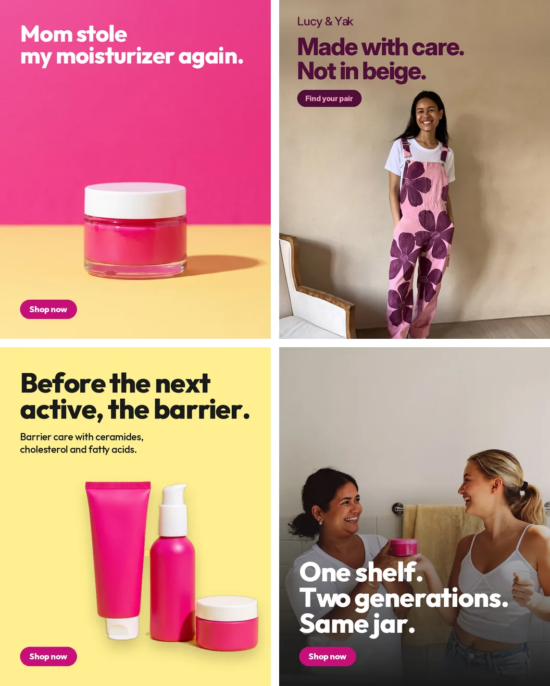
What I set out to test
Whether AI can do the volume of an ad set (research, drafts, layouts in every size, motion) while a person still owns every creative decision, and whether the finished files hold up to a designer’s eye.
What I decided
Put the checks in the tools, not in my attention. The look lives in a locked file. Every stage stops on a review page where I sign it off. The renderer measures the finished file, not the plan for it.
What I made
A Python toolchain for static ads, built with Claude Code as the engineer and me as the art director, and two campaigns run through it: 10 Byoma ads in 3 sizes with 3 motion loops, and 2 Lucy & Yak ads with loops.
Scope
12 ads, 34 static filesFeed 4:5, square 1:1 and Stories 9:16, all passing the Meta specs
13 signed decisionsEach one saved on a review page and read back before the next stage
62 generations, all loggedEvery one with its verdict and the reason, rejects included
About 30 paid creditsThe agent asked before every paid run; the drafts ran free
01 · The pipeline
Every stage is a page, and nothing moves until I sign it.
Research, brief, look, lock, layouts, the set, QA and motion. At the end of each stage the agent publishes a review page with the work and the decisions it needs: approve, fix or drop each ad, sign the lock, add a note. I save it, and the agent reads the saved answers back before it starts the next stage.
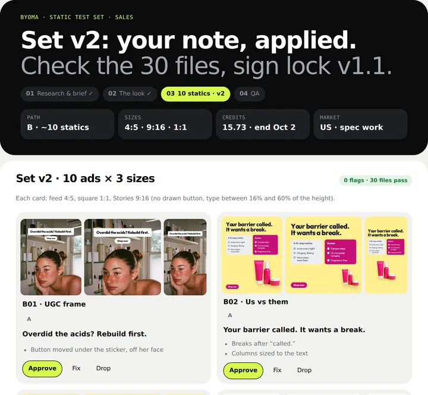
Why a page, not a chat
A chat answer is a wall of text, and most of it is not the decision. A page shows the work at the size it will be seen, puts the decision next to it, and keeps a record. When I came back to a stage a day later, the saved answers were still there.
What a gate holds
13 gates across the two brands. The Byoma set gate held a verdict for each of the 10 ads, a choice on 3 swapped headlines, the lock signature and one note. That note is the reason chapter 06 exists.
Spend has its own rule: the agent quotes the model, the count and the credits, and waits for a yes. Every run, reruns included.
02 · The lock
The brand, written as a file the tools have to obey.
Prompt tokens, palette roles, the copy rules, the words that are banned and the proof the ads are allowed to show. Every image records the lock version it was made with. Change a token, and the version goes up.
From the lock
# byoma.dna.yml · v1.1 · signed WORLD products on a flat butter-yellow set; people in a real, sunny bathroom FORM plain unbranded hot-pink packs, white caps, never a real label palette C71077 hero · E7168F accent FFEF8F ground · 1A1A1A ink proof none supplied, so the proof formats refuse to build never clinically proven, derm approved, overnight, competitor names, anyone under 16 on screen
Why the brand pink got a partner
Byoma’s hot pink on its own yellow measures 3.7:1. That passes for big headlines and fails for a button label or a small ingredient name, which need 4.5:1.
So the lock gained a deeper pink for buttons, chat bubbles and small type: white on it reads at 5.6:1, and it reads at 4.8:1 on the yellow. The brand pink stays for anything big.
03 · The angles
Seven angles, scored, and the three that won.
Each angle was scored on three things out of five: how open the space is among competitors, how sharp the pain is, and how much proof the brand has. The score is the product. No proof was supplied, so the dermatologist angle scored 9 and never got made.
Two buyers, one per ad
Maya broke her skin barrier with acids and wants to rebuild. Karen buys for herself and her teenage daughter. The research named two segments, so every ad speaks to one of them, never both at once.
One casting rule came from the brief, not the model: nobody under 16 on screen, and no serums or acids anywhere near the teen.
Ten hooks, checked as a set
Every headline is checked by a script: seven words at most, 40 characters at most, no banned word, no number that reads as proof. Then the set is checked as a whole.
Reusing my six favourites made three pairs of ads open on the same word, which reads as one ad in a feed. I swapped in three lines from the drafts and showed the swap at the gate. I kept it.
04 · The look
Eight drafts, eight fake headlines, one word to blame.
I ran the first drafts myself in the Higgsfield web app, where they are free. Every one of the eight UGC drafts came back with invented text or empty boxes on the wall. The prompt had asked for “space for a headline”, and the model drew one.
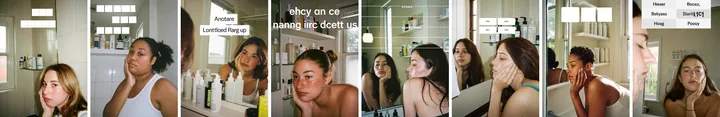
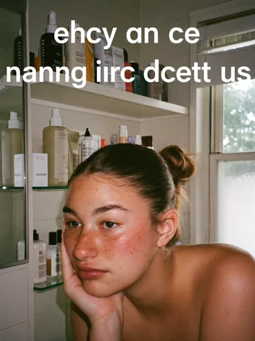
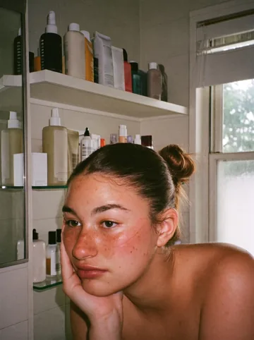
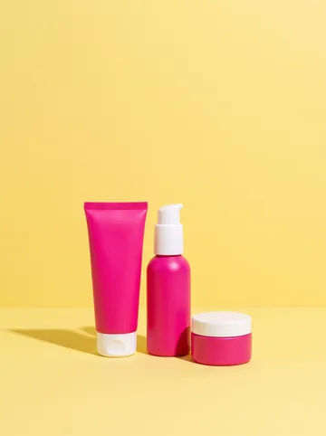
The rule that came out of it is now in the lock’s negative list and the lessons file: never write “headline”, “copy space” or “for text” in an image prompt. Ask for the space in picture terms instead: “the upper third is plain tiled wall”.
05 · The set
Ten ads, eight formats, three sizes each.
A test set, not a hero ad: at least three formats, two background treatments, no two headlines starting on the same word. The type is set by the renderer, never generated, so it stays sharp. The approved set, as it was signed off.
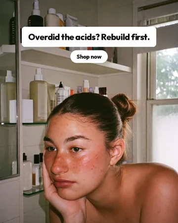
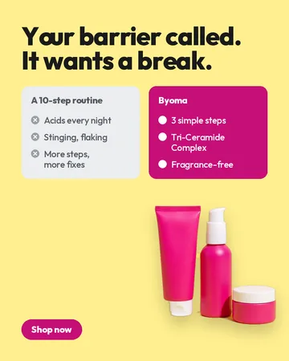
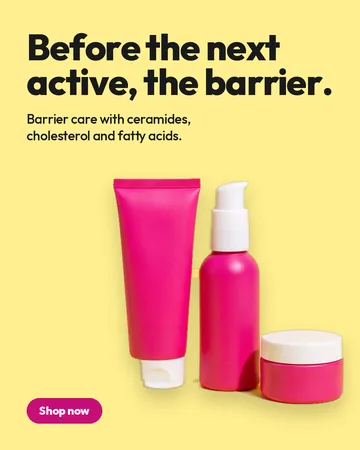
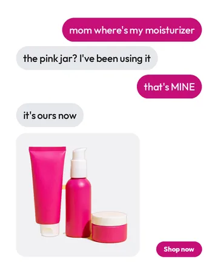
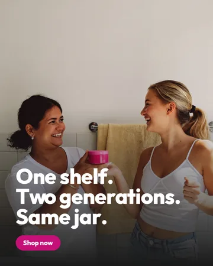
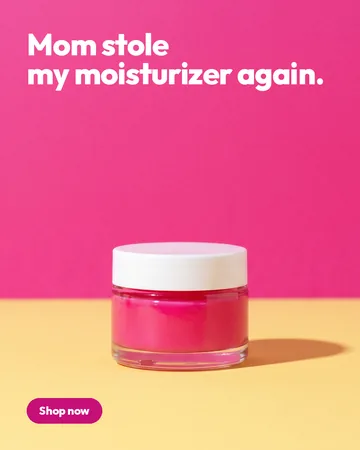
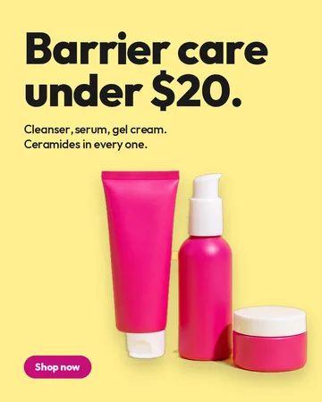
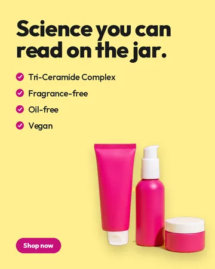
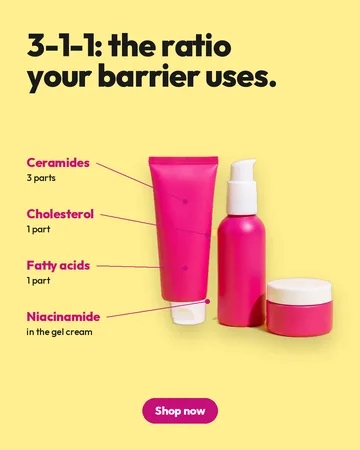
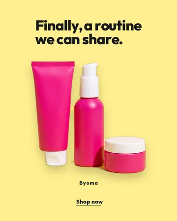
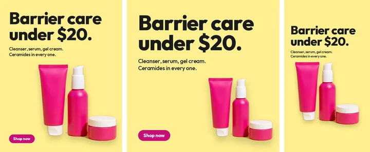
06 · The checks
My checks passed it. My eye didn’t.
The first set went to the gate with every automated check green. I approved eight ads, sent two back, and left one note: Text should be placed well, and too much white space harms the look of the ad. Put extra attention to line breaks.
The note was right, and the checks had no way to see it, because they checked the plan for each ad, not the file it became.
0flags, old checks
30flags, new checks, same files
13empty bands
13low contrast
4collisions
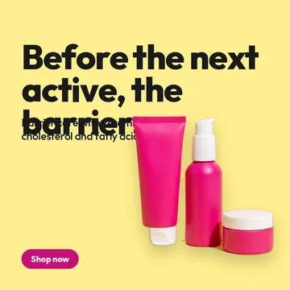
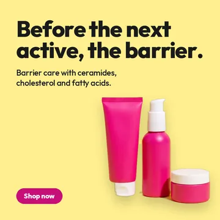
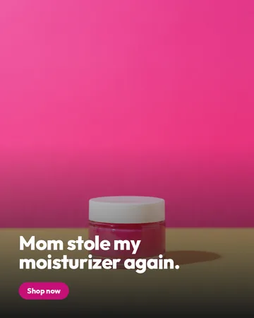

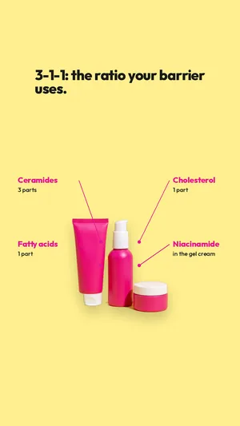
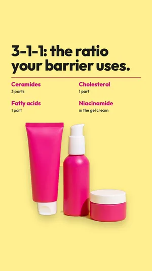
Line breaks, before and after
Your barrier called. It wantsYour barrier called.
a break.
It wants a break.Before the nextBefore the next active,
active, the
barrier.
the barrier.Science you can read onScience you can
the jar.
read on the jar.One shelf. TwoOne shelf.
generations. Same jar.
Two generations.
Same jar.
What the tools do now
Break lines like a designer. The fewest lines that fit, or one more if that lets each line end on a full stop or a comma. Never a single word left alone, never a line ending on “the” or “my”, never a sentence split across a break. The size is chosen to give a clean break, not just the biggest fit.
Check the file, not the plan. Every frame is rendered, then checked for type touching type or the product, a callout line through text, type outside the margins, contrast on the real pixels behind the type, and any empty band deeper than 15% of the height.
All 30 files of set v2: 0 flags. The checks now run in the repo’s self-test, so the same miss cannot come back quietly.
07 · The loops
Only the photo moves. The type never goes through the model.
Video models warp letters. So each ad is split into a plate with no type and a transparent type layer. Only the plate is animated, then the type is laid back on top, pixel for pixel. Every clip is checked frame by frame against its first frame before it becomes a loop.
Two free B06 clips, both rejected
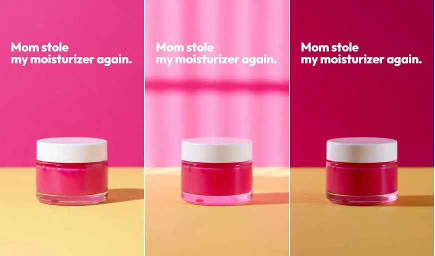
The web app’s “enhance prompt” rewrote my light line into blinds and a colour shift. The white type fell to 1.7:1. On the rerun, the list of things to avoid was pasted into the prompt itself, and the model drew exactly that list.
What changed in the tools
The free clips were made from the original 3:4 photos, not the cropped plate. A centre crop would have lost the approved zoom and the dark fade. The loop tool now renders every clip frame through the ad’s own layout, so the loop matches the signed static exactly.
Making the start frames also exposed a bug: on frames with a fade, the headline was leaking into the plate the model animates. Fixed, with a test that fails on the old code.
08 · The first run
Lucy & Yak: colour, in a world that sells beige.
The first brand through the pipeline, and a smaller job: two awareness ads for an independent UK clothing brand. The idea was one person in loud printed dungarees as the only colour in an all-beige room. Most of what broke here became a rule for the Byoma run.
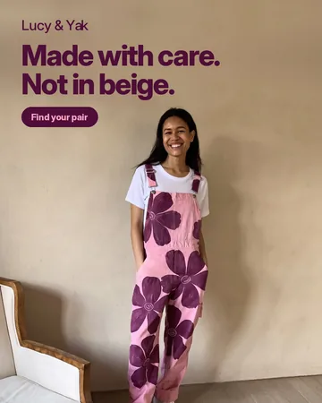
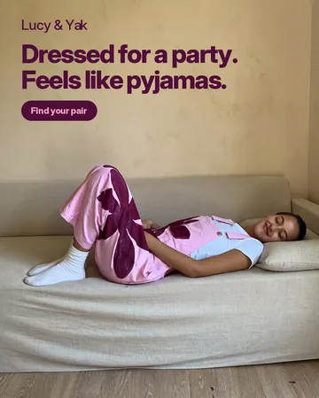
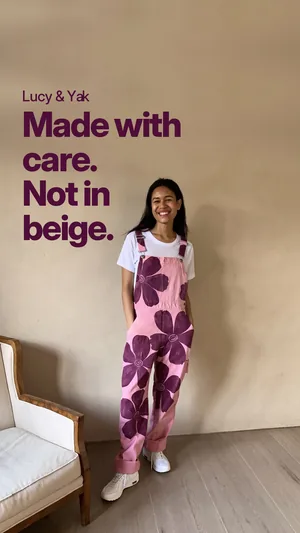
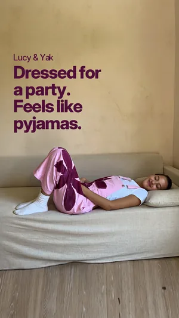
- Contrast on the real wallThe brand purple read 5.2:1 on a light sample of the wall and 3.4:1 where the headline actually sat. A deeper plum reached 4.8:1, signed as lock v1.1.
- Extend a wall, never mirror itMirroring copied her head upside down into the top of the frame. Tiling clean wall only, with a colour-matched seam, gave the Stories frame its room.
- Fake labels come backThe model kept sewing brand-like labels onto the dungarees. One edit removed them, and the lock now bans them.
- Ask about the free option firstI spent credits on a loop before checking the plan’s free video model. On Byoma the free route went first, and the paid one only where it failed.
09 · What I learned
19 lessons, each with its evidence, each enforced somewhere.
A lesson only counts if it changes a tool, a template or the lock. The repo keeps a lessons file where every entry names what happened and where the rule now lives. These are the ones I would hand to another art director first.
- Gates are pagesA decision next to the work, saved, and read back. Not a reply buried in a chat.
- Measure the type firstA layout made of fixed shares breaks when the size changes. Type first, product in what is left.
- Check the rendered filePlans pass. Pixels fail. Every check that matters runs after rendering.
- Contrast on real pixelsA swatch is not a wall. Measure what is actually behind the type.
- Never say “headline” to an image modelIt will draw one. Describe the empty space as part of the picture.
- Turn enhancers off for loopsAnd never put the words you don’t want into the prompt box.
- Ask before every paid runModel, count, credits, and a yes. Reruns too.
- The set is the unitTen good ads can still read as one ad. Check openers, formats and backgrounds across the set.
10 · What it can’t prove
No results. Spec work proves the process, not the ads.
None of these ads has run, so there is no click rate, no cost per sale and no winner. The pipeline has a scoring step for live results, and it has nothing to score yet. What the work does show is checkable: the files, the decisions and the logs.
- Claims not verified with the brand“Under $20”, fragrance-free, oil-free, vegan and the 3-1-1 ratio came from public sources and product pages, not from Byoma.
- Stand-in fontByoma uses its own typeface. The ads use Outfit until the real file exists.
- AI peopleThe Maya and family photos are generated. Running them would need the platform’s AI label.
- Not affiliatedNeither brand asked for this, saw it or approved it. Packs are generic and no real label was faked.